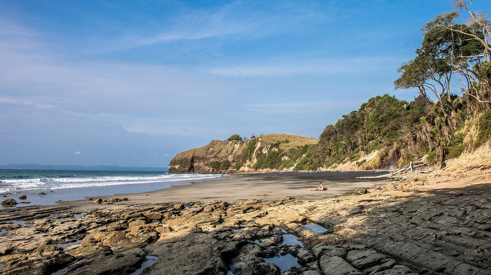

Mompiche
Esmeraldas, Équateur · surf, baignade

Village de pêcheurs de la province d’Esmeraldas, au bord d’une longue plage adossée à la forêt. Sa gauche de pointe, qui déroule au bout de la baie, est l’une des vagues les plus connues d’Équateur.
- Lieu
- Esmeraldas, Équateur
- Niveau
- Intermédiaire
- Activités
- surf, baignade
- Type d'eau
- Mer / océan
- Coordonnées
- 0.51, -80.02 (position approximative du secteur)
Dangers à connaître
- Rochers au bout de la pointe.
- Courants quand la houle grossit.
Le conseil d'Ocean Buddy
Laisse la pointe aux surfeurs expérimentés quand la houle rentre ; la plage du village convient mieux pour débuter par petite mer.
Ouvrir dans Ocean Buddy Télécharger sur l'App Store
Source : Fiche Ocean Buddy · septembre 2026 · à vérifier localement.